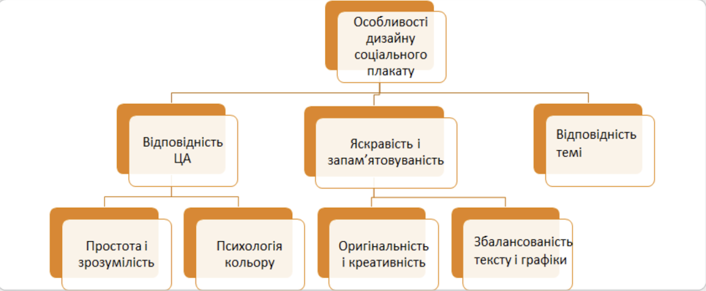

Соціальний плакат – це плакат, який пропагує базові соціальні цінності, в якому відображені соціальні прояви особистості, специфіка соціальних відносин у суспільстві, значущі соціальні проблеми, загрози і лиха. Плакат акумулював у собі досягнення станкової та книжкової графіки, фотографії та типографіки, він є невід’ємною частиною візуальної культури, ефективним засобом масової інформації.
Соціальний плакат має на меті привернути увагу аудиторії до певної проблеми або соціальної ситуації та спонукати до дії. Він може містити різноманітну інформацію, наприклад, про важливість охорони здоров'я, боротьбу зі шкідливими звичками, підтримку екології, боротьбу з насильством та дискримінацією тощо. Плакат можна використати як засіб просвітництва та формування свідомості громадян з метою досягнення позитивних змін у суспільстві.
Соціальний плакат зазвичай пропагує базові соціальні цінності, він може відтворювати соціальні прояви особистості, специфіку соціальних відносин у суспільстві, значущі соціальні проблеми, загрози і лиха. Зараз плакати акумулюють у собі досягнення станкової та книжкової графіки, фотографії та типографіки, вони є невід’ємною частиною візуальної культури, ефективним засобом масової інформації.
Основні функції соціального плакату – візуальна та інформаційна.

Соціальний плакат – це не тільки витвір дизайнерського мистецтва, але й засіб масової наочної інформаційної агітації. Головна мета та цілі соціального плакату спрямовані на інформування та пропаганду основних соціальних людських цінностей. За допомогою соціального плакату відбувається передача важливої інформації якомога більшій кількості людей. Основні соціальні людські цінності, які за допомогою такого виду плакату можуть бути відображені, – це соціальні відносини в суспільстві, актуальні та соціальні проблеми та інші види загроз.
Можна виділити кілька взаємопов'язаних тематик у соціальних рекламних плакатах:
- попередження про загрози, наслідки, інформування про благі вчинки та цілі;
- відображення цінностей;
- створення чогось нового, позитивного та корисного;
- психотерапевтичні методи для соціуму.
У створенні дизайну соціального плаката важливо дотримуватися таких принципів:
- однозначність і зрозумілість образу: все зайве, що не має значення, має бути відкинуто;
- лаконізм, графічна виразність донесення думки;
- синхронність; відповідність сприйняттю сучасного користувача.
Композиційні особливості дозволяють поділити плакати на наступні групи:
- центральним на плакаті є зображення, тому текстова складова мінімальна;
- текст і графіка доповнюють одне одного, будучи невід'ємними компонентами;
- у композиції спостерігається домінування тексту або є чисто шрифтове оформлення засобами типографіки і повна відсутність графічної складової.
При створенні плакатів зазвичай використовують художні метафори, різноманітні фігури різного масштабу та комбінують фотографії, малюнки і живопис. Окрему увагу приділяють текстовій компоненті, такій як шрифтова композиція, шрифтові гарнітури, розмір та колір шрифту.
Типографіка грає важливу роль в соціальних плакатах, оскільки допомагає передати повідомлення та звернути увагу на проблему, яку плакат пропагує. Для соціальних плакатів, зазвичай використовуються легко читабельні гарнітури з великими літерами, щоб привернути увагу до повідомлення. Текст має бути достатньо великим, щоб його можна було зрозуміти здалеку, та має бути розташований у зручному для читання місці. Фон на соціальних плакатах має бути яскравим та чітким, щоб звернути увагу на повідомлення. Він також може бути використаний для передачі певного настрою, наприклад, фон зображення зруйнованого міста може викликати почуття тривоги. Макет повинен бути збалансованим, щоб уникнути переваги одного елементу над іншим.
Соціальні плакати неминуче навіюють неусвідомлювані емоційні образи. Пам'ять, яку пов’язують з емоціями, має значний вплив на поведінку людини. Соціальні плакати передають не лише інформацію, здатну для передачі візуально, але й емоційне забарвлення. Як відомо, емоції можуть бути як позитивними так і негативними, ці емоції мають різний вплив на різних людей. Позитивні емоції стимулюють аудиторію до досягнення мети, негативні емоції можуть допомогти уникнути наслідків, що викликають неприємні стани.
Використання в соціальних плакатах певних (визначених) кольорів може стати суттєвим в передачі емоційного настрою або повідомлення на соціальному плакаті. Наприклад, використання червоного кольору може бути використане для попередження про небезпеку, для привертання уваги та для створення відчуття небезпеки, яке здебільшого попереджає. Використання блакитного кольору може нести спокій та безпеку. Крім того, кольорова гамма може використовуватись для підсилення текстової інформації та привернення уваги до певних елементів плакату.